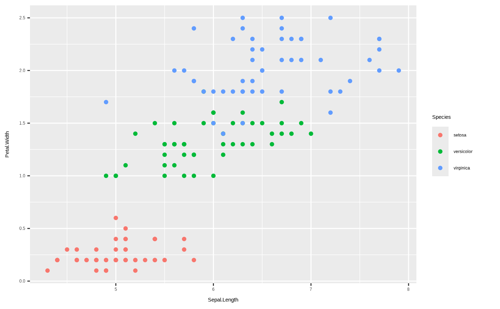
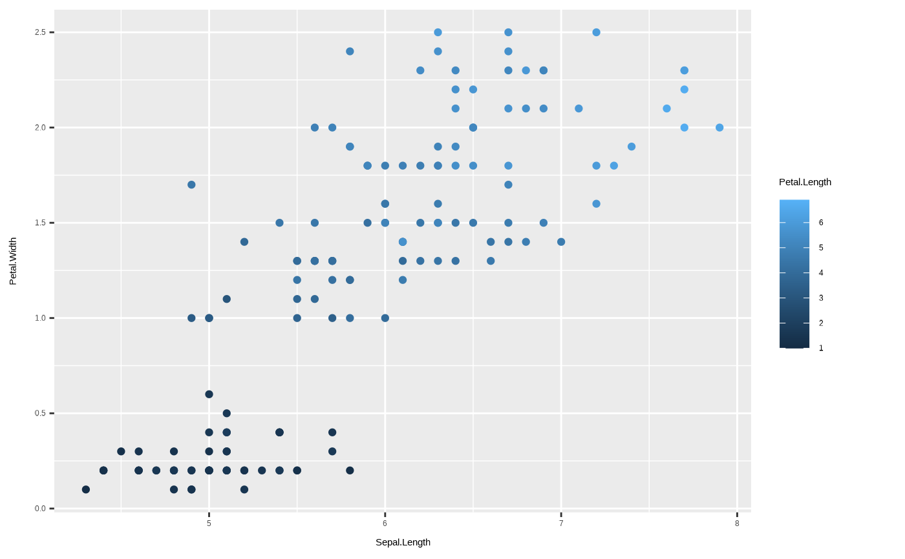
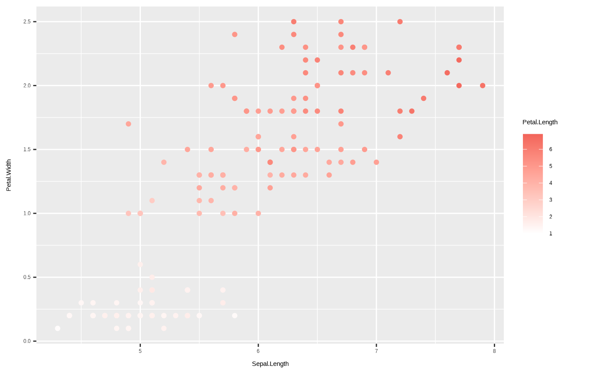
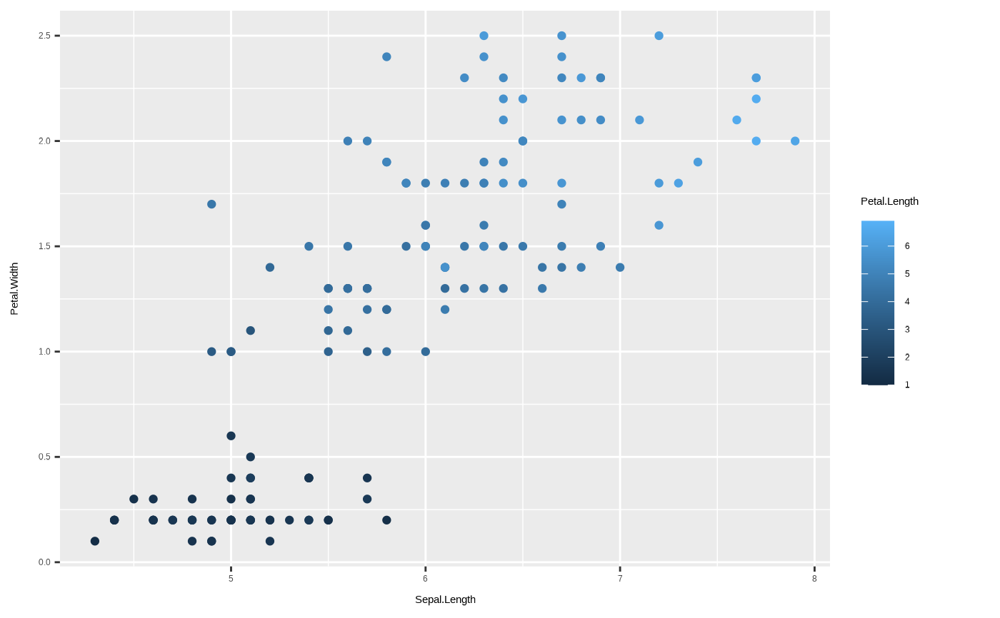
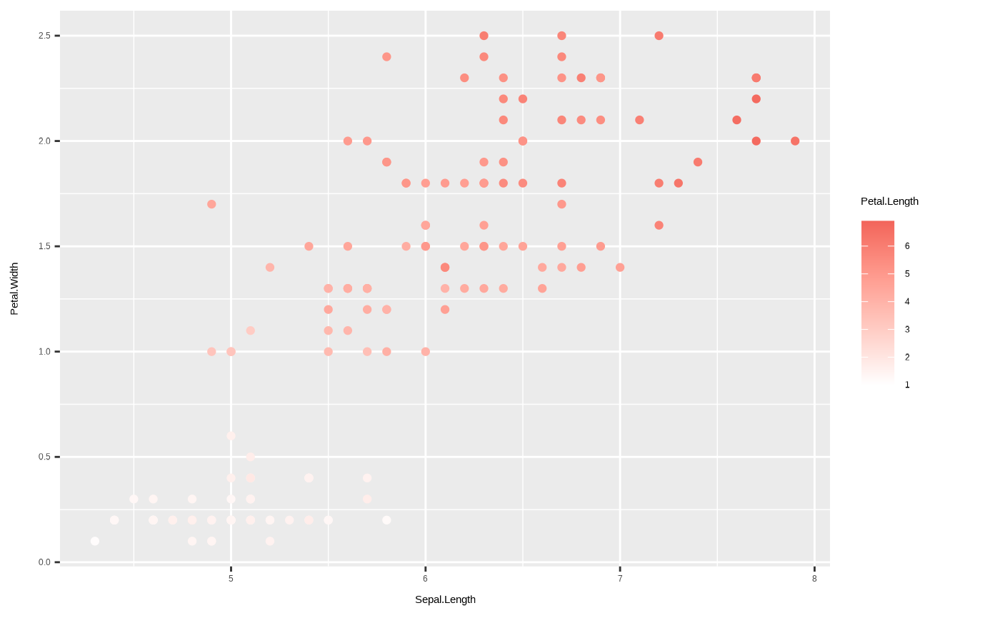

Color scales using the HDX palette. For discrete color scales, the
scale_color_hdx_...() and scale_fill_hdx_...() family of functions are
available. For gradient scales, use scale_color_gradient_hdx() and
scale_fill_gradient_hdx() functions for a single color scale or
scale_..._gradient2...() alternative.
scale_color_hdx_discrete(na.value = hdx_hex("gray-light"), ...)
scale_colour_hdx_discrete(na.value = hdx_hex("gray-light"), ...)
scale_color_hdx_gray(na.value = hdx_hex("tomato-hdx"), ...)
scale_colour_hdx_gray(na.value = hdx_hex("tomato-hdx"), ...)
scale_colour_hdx_grey(na.value = hdx_hex("tomato-hdx"), ...)
scale_color_hdx_grey(na.value = hdx_hex("tomato-hdx"), ...)
scale_color_hdx_mint(na.value = hdx_hex("gray-light"), ...)
scale_colour_hdx_mint(na.value = hdx_hex("gray-light"), ...)
scale_color_hdx_sapphire(na.value = hdx_hex("gray-light"), ...)
scale_colour_hdx_sapphire(na.value = hdx_hex("gray-light"), ...)
scale_color_hdx_tomato(na.value = hdx_hex("gray-light"), ...)
scale_colour_hdx_tomato(na.value = hdx_hex("gray-light"), ...)
scale_fill_hdx_discrete(na.value = hdx_hex("gray-light"), ...)
scale_fill_hdx_gray(na.value = hdx_hex("tomato-hdx"), ...)
scale_fill_hdx_grey(na.value = hdx_hex("tomato-hdx"), ...)
scale_fill_hdx_mint(na.value = hdx_hex("gray-light"), ...)
scale_fill_hdx_sapphire(na.value = hdx_hex("gray-light"), ...)
scale_fill_hdx_tomato(na.value = hdx_hex("gray-light"), ...)
scale_fill_gradient_hdx(na.value = "transparent", ...)
scale_fill_gradient_hdx_sapphire(na.value = "transparent", ...)
scale_fill_gradient_hdx_mint(na.value = "transparent", ...)
scale_fill_gradient_hdx_tomato(na.value = "transparent", ...)
scale_color_gradient_hdx(na.value = "transparent", ...)
scale_colour_gradient_hdx(na.value = "transparent", ...)
scale_color_gradient_hdx_sapphire(na.value = "transparent", ...)
scale_colour_gradient_hdx_sapphire(na.value = "transparent", ...)
scale_color_gradient_hdx_mint(na.value = "transparent", ...)
scale_colour_gradient_hdx_mint(na.value = "transparent", ...)
scale_color_gradient_hdx_tomato(na.value = "transparent", ...)
scale_colour_gradient_hdx_tomato(na.value = "transparent", ...)
scale_color_gradient2_hdx(na.value = "transparent", ...)
scale_colour_gradient2_hdx(na.value = "transparent", ...)
scale_fill_gradient2_hdx(na.value = "transparent", ...)Arguments
- na.value
Colour to use for missing values
- ...
Arguments passed on to
discrete_scalepaletteA palette function that when called with a single integer argument (the number of levels in the scale) returns the values that they should take (e.g.,
scales::pal_hue()).breaksOne of:
limitsOne of:
NULLto use the default scale valuesA character vector that defines possible values of the scale and their order
A function that accepts the existing (automatic) values and returns new ones. Also accepts rlang lambda function notation.
dropShould unused factor levels be omitted from the scale? The default,
TRUE, uses the levels that appear in the data;FALSEincludes the levels in the factor. Please note that to display every level in a legend, the layer should useshow.legend = TRUE.na.translateUnlike continuous scales, discrete scales can easily show missing values, and do so by default. If you want to remove missing values from a discrete scale, specify
na.translate = FALSE.labelsOne of:
NULLfor no labelswaiver()for the default labels computed by the transformation objectA character vector giving labels (must be same length as
breaks)An expression vector (must be the same length as breaks). See ?plotmath for details.
A function that takes the breaks as input and returns labels as output. Also accepts rlang lambda function notation.
guideA function used to create a guide or its name. See
guides()for more information.callThe
callused to construct the scale for reporting messages.superThe super class to use for the constructed scale
Value
Relevant ggplot2 scale object to add to a ggplot2::ggplot() plot,
either ggplot2::ScaleDiscrete or ggplot2::ScaleContinuous.
See also
gghdx() for setting default fill and color scaling,
along with other styling.
Examples
library(ggplot2)
# discrete scaling
p1 <- ggplot(iris) +
geom_point(
aes(
x = Sepal.Length,
y = Petal.Width,
color = Species
)
)
p1

p1 + scale_color_hdx_discrete()
p1 + scale_color_hdx_mint()
 # use gradient scaling
p2 <- ggplot(iris) +
geom_point(
aes(
x = Sepal.Length,
y = Petal.Width,
color = Petal.Length
)
)
p2

p2 + scale_color_gradient_hdx_mint()
p2 + scale_color_gradient_hdx_tomato()

# use gradient scaling
p2 <- ggplot(iris) +
geom_point(
aes(
x = Sepal.Length,
y = Petal.Width,
color = Petal.Length
)
)
p2

p2 + scale_color_gradient_hdx_mint()
p2 + scale_color_gradient_hdx_tomato()
